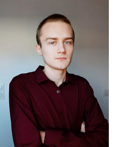

|

|
Bonjour, je suis Thomas Mirbey. |
Le BUT R&T est une formation de 3 ans. Elle permet de maîtriser les technologies de l'information et de la télécommunication.
En première année, je vais apprendre à concevoir, superviser, administrer et déployer des réseaux informatiques.
La filière permet également de développer les compétences en programmation. C'est un point essentiel, car de plus en plus, un administrateur réseau a besoin de développer des outils ou des applications pour gérer, automatiser son réseau.
La deuxième année propose trois parcours :
- pilotage de projets réseaux
- cybersécurité
- internet des objets et mobilité
Je souhaiterais poursuivre en deuxième année en suivant le parcours internet des objets et mobilité.
A la suite de mon BUT R&T, je souhaiterai intégrer le Master IOT à Montbéliard.